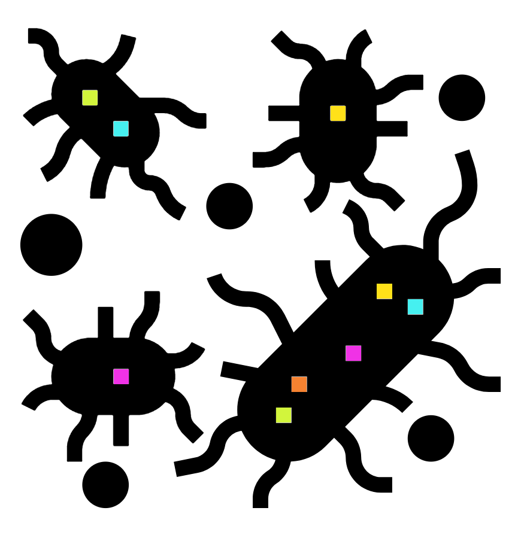
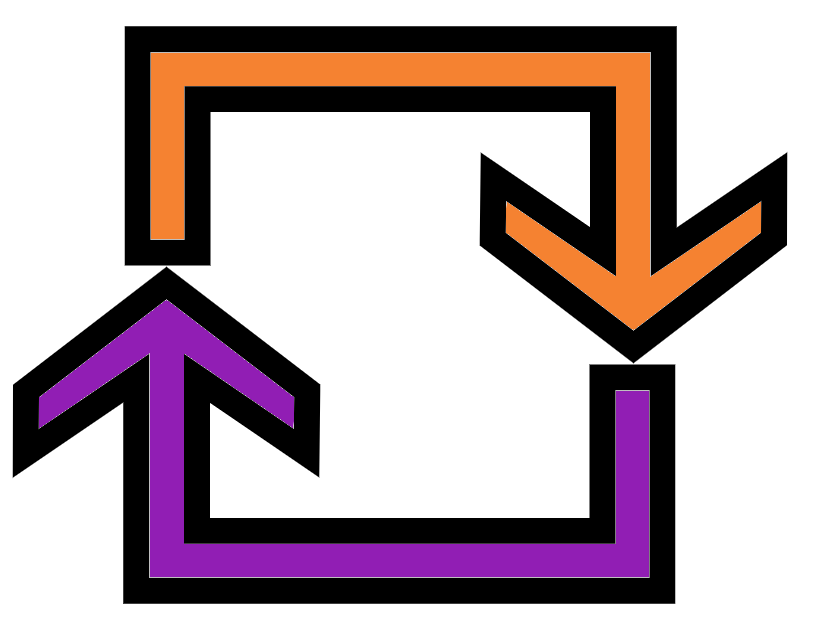
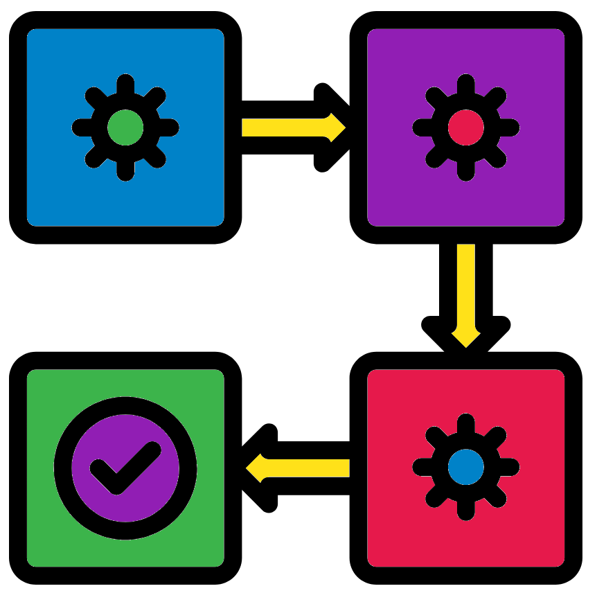
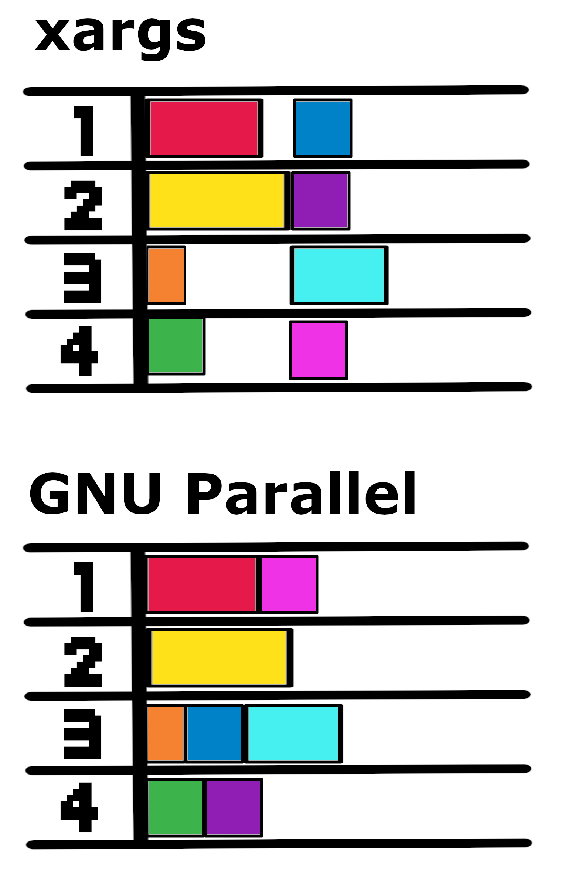

Chapter 2 Multiple sample workflow

In the standard workflow bookdown we assembled and annotated a single sample/genome. In your future projects you will most likely need to carry this out for multiple samples at one. This could be carried out by running each command for each sample separately. However, there are much quicker methods.
In this section I will introduce you to my preferred method of carrying out commands on multiple samples. This involves a text file containing all the samples names in conjunction with while read loops.
2.1 Multiple sample raw data

Prior to running we need the data first. Copy over the directory that contains the data. The copied directory will be used as the analysis directory.
#Move to your bacterial_assembly directory
cd ~/bacterial_assembly/
#Create a multi_sample_workflow directory with a data subdirectory
mkdir -p multi_sample_workflow/data
#Move into the new analysis directory
cd multi_sample_workflowWe will be running three Bacillus cereus samples through the standard workflow. We'll create softlinks of the PacBio fastq files. It is always good to use softlinks for read data if you are not going to move it from its original location.
#Softlink the PacBio fastq files we will use
ln -s /pub39/tea/nsc006/NEOF/bact_assembly/multi_sample_workflow/* data/
#List contents of the data directory
ls dataNote When creating a softlink you should always use absolute (whole) paths for the original file/s you specify.
2.2 Sample file

Now it is time to make the sample file we will use for the future while read loops. This file will contain the sample names, one sample name per line.
For ease and convenience we will change the prefix of our PacBio fastq files to that of our desired samples names. In this case it is removing the _0001 part.
We could rename all the files with the mv command but this might be awkward with many files. Instead we will use the rename command
#Move into the data directory
cd data
#Rename the files
rename "s/_0001//" *.fastq
#List contents
ls .rename will rename all indicated files (*.fastq = all files in current directory with the suffix .fastq) using syntax similar to the sed command.
The "s/_0001//" is made of four parts:
s/: Thesindicates we are carrying out a substitution. We will substitute regular expressions (i.e. pattern) for a replacement./_0001/: The first instance of_0001is to be substituted.- This is the regular expression.
//: The matched pattern (_0001) is to be substituted with nothing.- This is the replacement.
- The end, after the last
/: Contains any flags to be provided to the substitution command.- The most commonly used flag is
gwhich stands for global substitution. This will cause substitutions to occur for every instance of the regular expression found. Default is only the first instance of the regular expression to replaced.
- The most commonly used flag is
For more info on sed please the Intro to Unix bookdown.
With our newly named softlinks we can quickly create our sample file.
#List fastq files
ls *fastq
#List fastq files and remove the suffix (i.e. list sample names)
ls *fastq | sed "s/.fastq//"
#Redirect sample names to a new sample file
ls *fastq | sed "s/.fastq//" > ../samples.txtMove up one directory to the main analysis directory and view the contents of the sample file.
#Move up one directory
cd ..
#Print samples.txt contents to screen
cat samples.txt2.3 Start looping

Now that we have our data and our sample file we can start carrying out the standard workflow with loops.
Run the below example while read loop to see its output.
cat samples.txt | while read s ; do echo "File for sample ${s} is ${s}.fastq" ; doneEnsure you are in a terminal with an active bacterial_assembly environment then create an assembly output directory.
mkdir redbean_assemblyNow to run the redbean assembly steps with loops
#wtdbg2 step
cat samples.txt | while read s
do
wtdbg2 \
-x rs \
-g 5.4m \
-i data/${s}.fastq \
-o redbean_assembly/${s} \
-t 8
done
#Derive consensus
cat samples.txt | while read s
do
wtpoa-cns \
-t 8 \
-i redbean_assembly/${s}.ctg.lay.gz \
-fo redbean_assembly/${s}.ctg.fa
doneIn the commands the contents of the file samples.txt is provided to the loop (while read) with a cat command and a pipe |.
When looping through this file the commands in the loop are carried out three times, once for each sample. In future cases the loop will occur as many times as there are lines in the samples.txt file.
In each loop the ${s} is replaced with the current line from the file. s is set as the variable by the user when the loop is initiated (while read s). s is arbitrary and I use it to be short for "sample" . It could be any letter or even a word, I would not recommend using only numbers.
Below we will use echo to print everything within the wtdbg2 loop to demonstrate how the loop is behaving. This will print out to screen the commands that would be run, replacing the variables (${s}) with the sample names. This is useful to get a sense of what the loop is actually doing. This can also be a handy way to debug your loops if they are not working as intended.
cat samples.txt | while read s
do
echo \
"wtdbg2 \
-x rs \
-g 5.4m \
-i data/${s}.fastq \
-o redbean_assembly/${s} \
-t 8"
doneNote: Loops need to start with do and end with done as shown in the commands.
2.4 Continuing the workflow

With this quick intro to using while loops and the Standard workflow bookdown, complete the genome assembly and annotation for these three samples. Finish off with one final MultiQC report containing the final QUAST , BUSCO, and Prokka info for all the samples.
Notes:
QUAST: This command can be provided multiple assembly files at once so a loop won't be needed.BUSCO: Ensure you use the correct lineage dataset for Bacillus cereus.MultiQC: Like QUAST no loop is required for this command.
To get the corrected reads, required for circularisation, please run the below commands in your multi_sample_workflow directory.
#Copy compressed directory corrected corrected reads
cp /pub39/tea/nsc006/NEOF/bact_assembly/corrected_reads.tar.gz
#Uncompress directory
tar -xzvf corrected_reads.tar.gz
#List contents of uncompressed directory
ls corrected_reads2.5 GNU Parallel
Loops are a convenient method for relatively quick processes or when you have the time. However, in the future you may have time constraints or a large machine you want to make the most out of. In these cases you can parallelise your processes so multiple samples are being analysed at a one time.
There a different ways to do this but the most common tool I use is GNU Parallel. This command allows you to state how many jobs you want to parallelise. This number is chosen based on how many cores and how much RAM each process would need versus the current availability of the machine you are working on. Keep in mind other users might be taking up the machine's processes. The command top allows you to see the current load on a machine.
GNU Parallel will put on a new job once a job has finished. I.e. if you have four jobs on at once, with 4 waiting, the fifth job will be put on once one of the first four finish (depending on which finished first). Compare this to another tool that can put put on multiple jobs/processes at once, such as xargs. If you put on four jobs/processes at once with xargs it will wait for the first four processes to all finish before putting on the next four. This can increase the time of analysis due to some samples taking much longer than others, as visualised below.

Each coloured block is a different job with the width showing the time it takes to run. With four jobs/processes being parallelised at once the same 8 jobs are finished with GNU Parallel quicker than with xargs.